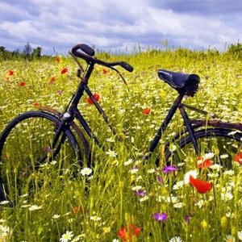
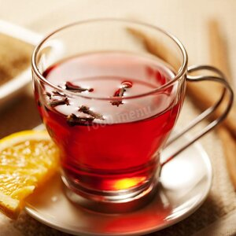

Заголовок
Ка́ва — напій, що виготовляється зі смаженого насіння плодів — «бобів» кавового дерева. Кава найбільше цінується через виражену збадьорливу дію, завдяки вмісту алкалоїдів кофеїну та теоброміну. Кава культивується з давніх часів і займає важливе місце в кулінарних традиціях багатьох культур світу. За деякими оцінками, кавовий напій є другою за об'ємами споживання речовиною на Землі після води[1] (за іншими — другим після води є чай[2]).
Заголовок
Велосипе́д (також: зах. укр. ро́вер, схд. укр. ла́йба,[джерело?] закарп. укр. біциґлі, зах. бук. колесо) — це транспортний засіб, що його приводить в рух сила людських м'язів, що передається на ведуче(і) колесо(а). Зазвичай велосипеди мають два колеса; бувають також триколісні велосипеди та інші, екзотичніші — одноколісні, чотириколісні тощо. Нині у світі використовується понад мільярд велосипедів[1]; таким чином велосипед — найрозповсюдженіший транспортний засіб. Він став таким завдяки низькій вартості (включно з вартістю експлуатації), невеликій вазі і розмірам, відсутності потреби в пальному та елементах безпеки. У розвинутих країнах велосипеди набувають популярності завдяки спортивному навантаженню та екологічній чистоті.
Заголовок
Чай — напій, що отримується заварюванням, варінням або настоюванням підготовленого листа чайного куща. Чаєм також називається сухе листя чайного куща, призначене для заварювання цього напою. У розширеному сенсі — будь-який листяний або трав'яний настій. Найрозповсюдженішими та найвідомішими є чорний та зелений чаї.